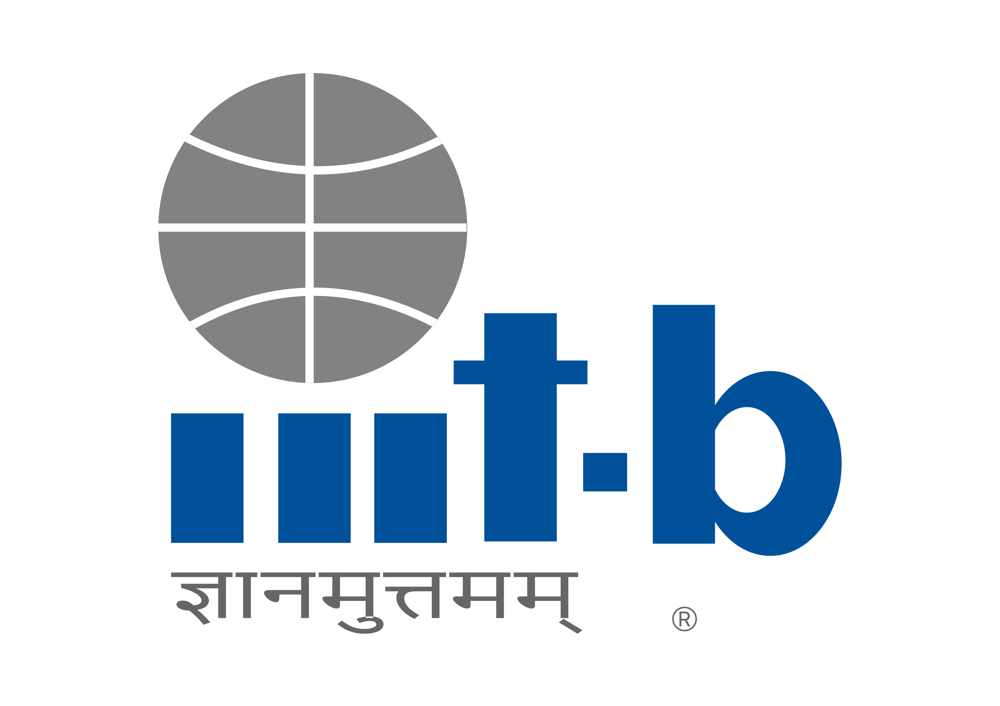

WebSciX 2026
20 Years of Web Science: Navigating the Era of Generative and Agentic AI
Download Brochure ↓About WebSciX India
WebSciX India is the inaugural Asia-Pacific satellite event of the ACM Web Science Conference, dedicated to advancing interdisciplinary study of the Internet, World Wide Web, and Artificial Intelligence and their societal impact across India and the wider region. WebSciX builds upon the Web Science for Development (WS4D) series conducted in India since 2019.
Web Science integrates disciplines spanning computer science, sociology, economics, and policy studies to explore the socio-technical dynamics of digital ecosystems. WebSciX India aims to build a sustained regional community of researchers to investigate these dynamics within India's unique socio-cultural, economic, and technological context.
With over 800 million Internet users as of 2025, India's digital landscape is shaped by its 1.4 billion population, diverse cultures, and rapid technological adoption. India has made great strides in digital identity, payments, and public services — yet challenges around digital divides, misinformation, and data governance demand a focused regional Web Science approach.
Conference Theme
20 Years of Web Science — looking back and looking forward
Over two decades, Web Science has evolved from a descriptive study of hyperlink structures into a deeply interdisciplinary field integrating computational, social, economic, and regulatory perspectives. Its early phase established the web as both a technical artifact and a socio-technical system shaped by human behavior.
With the rise of Web 2.0, the field expanded to encompass user-generated content, misinformation, community formation, and platform governance. The subsequent decade saw convergence with data-intensive and AI-driven paradigms — big data, machine learning, knowledge graphs, and the Semantic Web — alongside growing attention to privacy, algorithmic bias, and ethical AI.
Today, Web Science is oriented toward understanding the web as a global critical infrastructure. The rise of Agentic AI — systems capable of reasoning, planning, and executing multi-step goals with minimal human oversight — marks the defining challenge of this next decade. WebSciX 2026 invites researchers, policymakers, and practitioners to explore this frontier together.
Topics of Interest
Fourteen interdisciplinary tracks spanning the technical, social, and policy dimensions of the web
Web Architecture & Decentralization
- Web3, DIDs & interoperability standards
- Sustainable web engineering
Network Science & Graph Theory
- Hypergraphs & dynamic network evolution
- Tipping points & agent-based simulation
Information Retrieval & Content Analysis
- Conversational search & answer engines
- Multimodal mining & web archiving
Algorithmic Bias & Auditing
- Audit-as-a-Service, polarization
- Coordinated inauthentic behaviour
Collective Intelligence & Crowdsourcing
- Hybrid human–LLM workflows
- Creator economy & online education
Autonomous Agency & Governance
- Agentic accountability & trust architectures
- Bot-to-bot economics
Cognitive & Social Implications
- Attention economy 2.0
- AI-native societies & synthesized culture
Public Good & Policy Design
- Agentic policy simulation, AI regulation
- DPDP & sovereign data frameworks
Digital Public Infrastructure (DPI)
- X-Road, Beckn, UHI, UPI, ONDC
- Digital Public Goods sustainability
Innovation, Infrastructure & Economy
- Regional AI models & open weights
- Platform monopolies & smart cities
Work, Knowledge & Labour
- Automation, gig work & reskilling
- AI in the education sector
Political & Popular Cultures
- AI slop, extreme speech & misinformation
- Gen-Z activism & digital well-being
Ethics & Epistemology
- Regional ethical AI, linguistic diversity
- Right to be forgotten
Regulation & Governance
- Platform & AI regulation
- Digital sovereignty, accountability
See the full list of topics and sub-tracks on the Call for Papers page →
Web Science Trust
WebSciX 2026 is held under the auspices of the Web Science Trust (WST), the global charitable organisation coordinating the WSTNet — a network of leading Web Science laboratories worldwide. The WST traces its roots to the Web Science Research Initiative (WSRI), co-founded at MIT CSAIL and the University of Southampton in 2006.
The Web Science Lab at IIIT Bangalore is a proud WSTNet member, bringing this global perspective to South Asia. Read the full history →